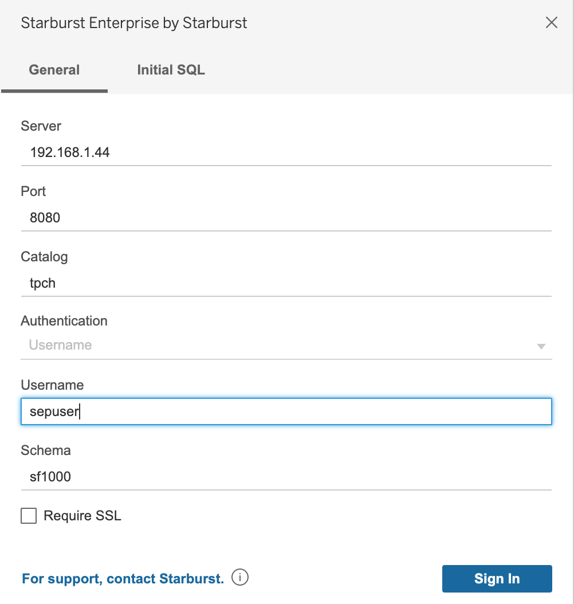
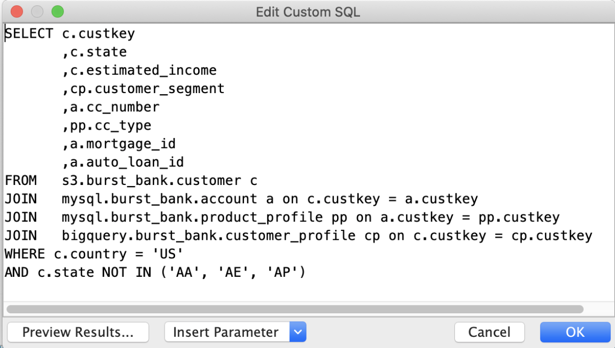
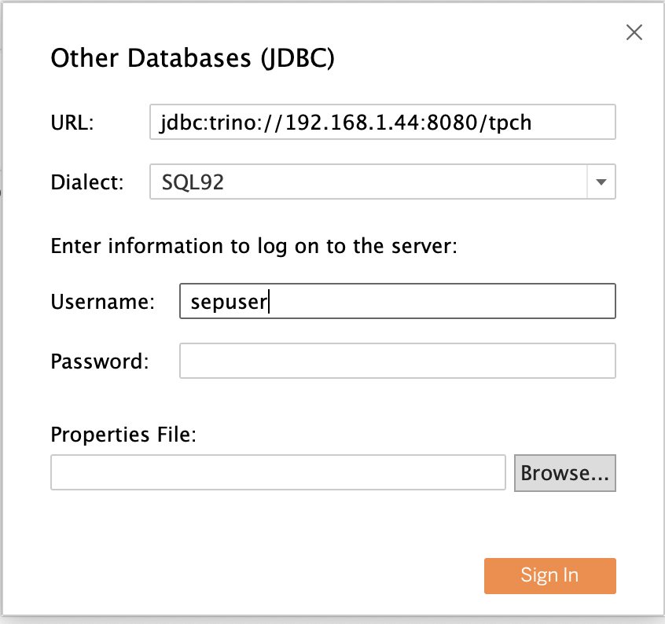

Tableau #
Tableau is a popular analytics tool with powerful data visualization capabilities. There are three ways to connect recent releases of Tableau products to recent releases of a Starburst Enterprise platform (SEP) cluster:
-
Tableau connector: The recommended connection uses a Tableau Connector (TACO) file paired with the Starburst JDBC driver.
-
ODBC connection: Starburst also supports connecting to SEP clusters with the Starburst ODBC driver.
-
Legacy JDBC connection: For sites using a plain JDBC connection using the legacy “Other Databases (JDBC)” method, Starburst strongly recommends migrating to the Tableau connector method, but Starburst also supports continued use of the legacy method.
Before you begin #
-
Determine the connection information for your SEP cluster, including its URL and login credentials.
-
Instructions to connect Tableau products to SEP clusters vary slightly, depending on the SEP version. See Determine cluster version.
Tableau connector with JDBC driver #
You can connect recent releases of Tableau Desktop to recent SEP clusters with a combination of Tableau Connector (TACO) file and JDBC driver.
Note that the Tableau Connector does not serve the same function as an SEP connector. The Tableau Connector is a bridge between Tableau and the standard SEP JDBC driver that together enable read-only access between Tableau and one or more SEP clusters.
Follow these steps to configure the Tableau connector:
-
Download the Tableau Connector file with
.tacoextension from the Starburst Enterprise page of Tableau’s Extension Gallery, using the Download button on the upper right of the page. This requires logging into Tableau’s site with a free login name. -
Move the Connector file to:
- Windows
- C:\Users\username\Documents\My Tableau Repository\Connectors
- macOS
- /Users/username/Documents/My Tableau Repository/Connectors
-
Download the Starburst JDBC driver according to your SEP version.
-
For SEP 350-e or older, download
presto-jdbc-350.jar. -
For SEP 354-e, download
trino-jdbc-354.jar. You can also download the latest JDBC driver version or a specific version to match your cluster version.
-
-
Place the JDBC driver file in the Tableau drivers directory:
- Windows
- C:\Program Files\Tableau\Drivers
- macOS
- ~/Library/Tableau/Drivers
Do not store more than one JDBC driver in this directory. Delete any older drivers when you update to a newer version. Connections to all SEP-connected data sources are made through the Starburst JDBC driver.
-
Start Tableau Desktop and select Connect to a server using the Starburst Enterprise by Starburst connector in Tableau.
-
Fill in the connection dialog with the following parameters:
-
Once the new report opens, you must reselect the schema specified in the connection dialog.
Field Value Server IP address of your SEP cluster Port Port used by your cluster (8080 by default) Catalog Name of the SEP catalog to connect to Authentication Leave blank Username Your SEP username Schema Name of the schema in the specified catalog to connect to

Customized JDBC connections #
If you need to set additional connection properties that are not included in Tableau’s connection dialog, customize the connection using a properties file. For more information, see Customize JDBC Connections Using a Properties File in the Tableau Community and the list of available parameters for the JDBC driver.
Starburst advantage #
Remember that Starburst Enterprise is not a database, it’s a SQL query engine that can connect to multiple data sources at the same time. Each SEP cluster can query multiple catalogs in a wide range of different data sources.
You can query all these data sources with one Tableau connection. Create it
configured for a specific catalog and schema. To query multiple catalogs, select
Custom SQL Query in Tableau, and then reference the fully qualified name of
any table using a catalog.schema.table identifier.
The follow example query accesses the three catalogs s3, mysql, and
bigquery:

This approach is faster because all data access is managed by SEP, and is executed on the cluster. Tableau can also pull data from multiple catalogs, but Tableau performs its joins and other operations as local analysis.
ODBC driver connection #
Contact Starburst Support to obtain access to the Starburst ODBC driver. This driver is supported for clusters running any supported SEP release. The Presto ODBC driver provided by Tableau is not supported.
Open Tableau and begin the ODBC configuration. On Tableau’s startup page, select Other Databases (ODBC), and configure as follows:
- Driver: Starburst Presto ODBC Driver
- Username:
<username> - String Extras:
Driver=Starburst Presto ODBC Driver;Catalog=<catalog>;Host=<host>;Port=<portDriver>;
The String Extras field supports any of the ODBC connection properties from
the Starburst ODBC driver.
Select Sign In to establish the connection. If you are prompted for a password, the server has authentication enabled.
The Tableau ODBC documentation contains further information.
Legacy JDBC driver connection #
Tableau provides a generic connection method titled Other Databases (JDBC). Although Starburst strongly recommends using a Tableau connection, this generic JDBC method is still available. Follow these steps:
-
Download the Starburst JDBC driver according to your SEP version.
-
For SEP 350-e or older, download
presto-jdbc-350.jar. -
For SEP 354-e, download
trino-jdbc-354.jar. You can also download the latest JDBC driver version or a specific version to match your cluster version.
-
-
Place the JDBC driver file in the Tableau drivers directory:
- Windows
- C:\Program Files\Tableau\Drivers
- macOS
- ~/Library/Tableau/Drivers
Do not store more than one JDBC driver in this directory. Delete any older drivers when you update to a newer version. Connections to all SEP-connected data sources are made through the Starburst JDBC driver.
-
Start Tableau Desktop and select Connect to a server using the Other Databases (JDBC) connector in Tableau.
-
Fill in the connection dialog as shown in the following table. For the URL field, if you downloaded the Trino JDBC driver file to connect to newer SEP versions, use a JDBC connection string in this format:
jdbc:trino://cluster.example.com:8080/catalogIf you downloaded the PrestoSQL JDBC driver file to connect to older SEP versions, use a JDBC connection string in this format:
jdbc:presto://cluster.example.com:8080/catalogFor either driver, the JDBC connection string must include the initial catalog to connect to. Once connected, you can select schemas and tables within that catalog.
Field Value URL Full JDBC connection string for your cluster. Must include catalog. Dialect Must be ‘SQL92’ Username Your SEP username Password Your SEP password Properties File Specify or browse to the path of a JDBC properties file containing further specifications for this connection. See Customized JDBC Connections.

Is the information on this page helpful?
Yes
No